Pred izumom · igra
Tesla, 1888
Stroj brez iskrenja: trinajst let v čevljih Nikole Tesle, od Gradca do Niagare
Osnutek R1 · 30. 10. 20261. dejanje · 1856; 1875–1878 · Smiljan (prolog), Gradec
Stroj, ki noče sodelovati
Zgodba
Smiljan: začetek
Smiljan, Lika, leto 1856. Ti si Nikola Tesla. Rodiš se v kraju, ki leži v Vojni krajini Avstrijskega cesarstva; Avstro-Ogrska bo nastala šele pozneje. Kot datum tvojega rojstva se navadno navaja 10. julij 1856, vendar Franklin Institute navaja 9. julij. Razlike med zapisoma tu ne odpravljamo z domnevo.
Oče Milutin je pravoslavni duhovnik. Mati Đuka je v družinskem izročilu povezana s spretnim izdelovanjem in prilagajanjem vsakdanjih pripomočkov. Odraščaš ob dveh vrstah dela: eno gradijo besede in razlage, drugo roke, orodje in opazovanje. To je okolje tvojega otroštva, ne dokaz, da je bil kateri od tvojih poznejših izumov že vnaprej določen.
Zgodba te ne bo spraševala, ali poznaš svoje prihodnje patente. Vanjo vstopaš kot človek svojega časa, ki lahko ugotavlja, primerja in dvomi. Iz otroštva bomo prešli v Gradec, kjer bo prizor ob električnem stroju odprl vprašanje, na katero ti učbenik še ne bo ponudil izdelane rešitve.
Viri (3)
About Nikola Tesla, Memorial Center Nikola Tesla Smiljan · Case Files: Nikola Tesla, Franklin Institute · Nikola Tesla and the Graz Tech, str. 20, arhivska raziskava TU GrazZgodba
Pred profesorjevim strojem
Gradec, jeseni 1875. Ti si Nikola Tesla, star devetnajst let, in začneš študirati na tamkajšnji tehniški visoki šoli. Študijski arhiv potrjuje vpis v letu 1875/76 in opravljene izpite. V poznejšem spominu boš kot začetek navedel tudi leto 1877, vendar ima pri datumu vpisa prednost ohranjena univerzitetna dokumentacija.
Pri profesorju Jakobu Pöschlu obiskuješ eksperimentalno fiziko. Predstavljaj si predavalnico, kjer električni stroji niso le risbe v knjigi: ko se naprava premakne, lahko njeno obnašanje opazuje vsak navzoči. Med demonstracijo se pojavi Grammeov stroj (datum prizora ni zanesljiv; arhiv TU Graz kaže na leto 1877). Vrti se, toda pri delovanju opaziš močno iskrenje, zaradi katerega se uspeh demonstracije zdi nepopoln.
O tem prizoru boš pripovedoval šele v spominih iz let 1915 in 1919. Eno pričevanje ga postavlja v drugi letnik, drugo v zimo 1878, zato točen čas ni potrjen; dobesedni pogovor s profesorjem ni ohranjen. Pred tabo ostaja uporabno vprašanje, ki ne potrebuje dramatičnega dialoga: kaj storiti, ko se električni stroj vrti, vendar še ni dovolj zanesljiv?
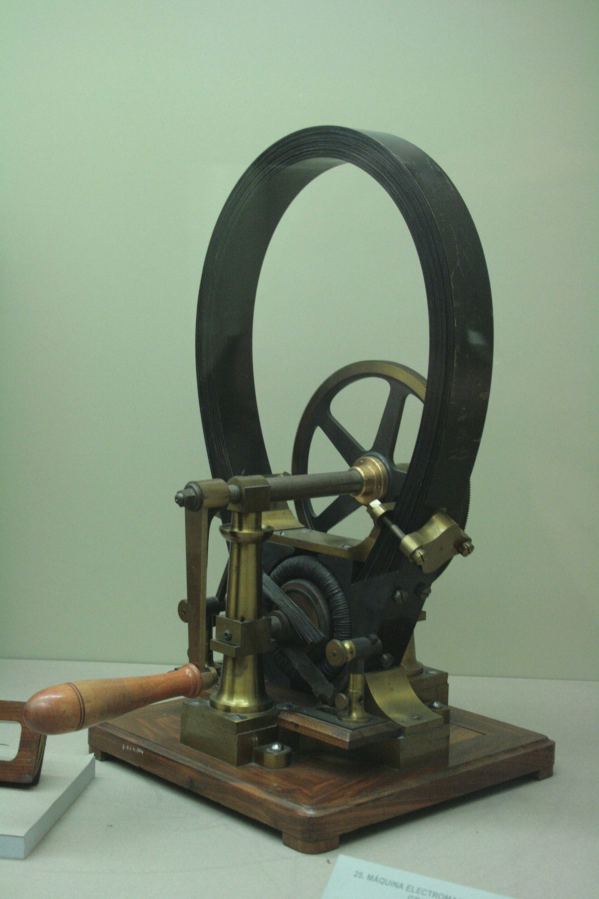
Viri (4)
Nikola Tesla and the Graz Tech, str. 20, arhivska raziskava TU Graz · Institute of Experimental Physics: History, TU Graz · Nikola Tesla, My Inventions III: My Later Endeavors, Electrical Experimenter, april 1919 · Nikola Tesla, Some Personal Recollections, Scientific American, 5. junij 1915Izziv
Neprijetna cena vrtenja
Pred teboj je Grammeov stroj iz profesorjeve demonstracije. Ti si Nikola Tesla, študent v Gradcu. Naprava se vrti, vendar njeno delovanje spremlja očitna težava. Pomisli, kaj takšna neprijetnost pomeni za nekoga, ki bi moral stroj uporabljati vsak dan, ne le nekaj trenutkov v učilnici.
Predstavljaj si, da imaš na voljo tedanjo delavnico, običajne električne materiale in čas za razmislek. Ne razpolagaš z opremo prihodnjih stoletij. O tem, kako je zgodovinski Tesla pozneje razmišljal, zdaj še ne veš ničesar; tvoja naloga je samostojna.
Kaj bi naredil ti, zdaj, s tem, kar imaš? Grammeov stroj se vrti, vendar pri delovanju močno iskri. Kako bi zasnoval zanesljivejši električni pogon, ki bi odpravil to težavo?
Tvoj odgovor → napiši ga vodniku igre v polje »Tvoje sporočilo« v panelu na levi (na telefonu spodaj). Piši s svojimi besedami, tudi pol ideje ali grobo skico je dovolj. Vodnik te bo vprašal naprej, namig pa dobiš samo, če ga prosiš.
Namig 1
Opazuj mesto, kjer se mirujoči električni deli dotikajo vrtečih. Ali iskre nastajajo prav tam?
Namig 2
Komutator ni samo povezava. Med obratom mora poskrbeti za spremembo električnega delovanja, da se koristna sila ne obrne v nasprotno smer.
Namig 3
Generator v sebi proizvaja izmenični tok; komutator ga šele preoblikuje za enosmerni motor. Ali bi se dalo to samodejno menjavanje smeri izkoristiti, namesto da ga mehansko odpravljaš? Kako tok pripeljati do vrtečega se dela, ostane odprto vprašanje.
Razkritje
Dobra zamisel še ni motor
Ti si Nikola Tesla in zdaj lahko ločiš nalogo stroja od njegove izvedbe. Iskrenje ni nujna lastnost vsakega elektromotorja. Pri Grammeovi zasnovi nastaja predvsem pri drsnem električnem stiku med ščetkami in komutatorjem, zlasti ob nepopolnem preklapljanju toka v navitjih. Komutator med obratom spreminja električne povezave oziroma smer toka v navitjih, da motor ohranja koristen navor. Če odstraniš le ščetke, še nisi povedal, kdo bo opravil to nalogo.
Generatorji v tvojem času že proizvajajo izmenične električne spremembe. Zato lahko začneš iskati pogon, ki ne potrebuje takšnega mehanskega preklapljanja. Toda kako bi brez drsnega stika dosegel trajno vrtenje in napajanje gibljivega dela? Tega v Gradcu še ne rešiš. Po svojih poznejših spominih si zastavil raziskovalni cilj, ne pa izdelal potrjenega indukcijskega motorja. Patent iz leta 1888 potrjuje poznejšo zasnovo, ne graškega prototipa.
Obe alternativi prejmeta izid B. Boljši kontakti, ustrezen pritisk ščetk in več segmentov lahko zmanjšajo iskrenje, ne odpravijo pa drsnega stika. Mirujoči elektromagneti z zunanjim mehanskim preklopnikom omogočajo rotor brez drsnega stika; preklopnik pa lahko sam iskri. Pri tej poti priznaj mejnika 1 in 2, ne 3. Dober preizkus zahteva samostojno vrtenje pod obremenitvijo ter manj iskrenja in segrevanja.
Dobesedni profesorjev dialog ni dokumentiran. Tranzistor (1947), elektronski osciloskop (1897 in pozneje), mikrokrmilnik (1970. leta) in elektronsko komutirani brezkrtačni enosmerni motor (20. stoletje) so iz prihodnosti. Ko se graški študij okoli prelomnice 1877/78 konča brez diplome, je vprašanje še vedno odprto.
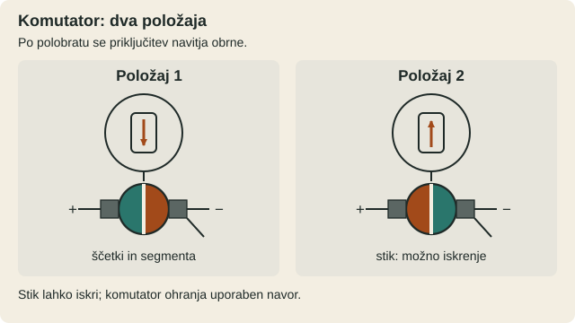
Viri (5)
Nikola Tesla, My Inventions III: My Later Endeavors, Electrical Experimenter, april 1919 · Nikola Tesla, Some Personal Recollections, Scientific American, 5. junij 1915 · Nikola Tesla and the Graz Tech, str. 26 · Nikola Tesla, Electro-magnetic motor, patent US381968A, prijava 1887, izdaja 1888 · The invention of the electric motor 1856–1893, Karlsruhe Institute of Technology2. dejanje · 1881–1882 · Budimpešta
Zamisel, ki še nima oblike
Zgodba
Budimpešta: novo delo
Budimpešta, 1881. Ti si Nikola Tesla. Gradec je za teboj, vendar vprašanje električnega stroja brez iskrenja na komutatorju ostaja. V novo mesto prideš zaradi dela, ne zaradi dokončanega izuma. V poznejših spominih zapišeš, da si sprva opravljal risarsko delo pri telegrafskih napravah, nato pa prevzemal zahtevnejše naloge ob razvijanju telefonske službe.
Telegrafski in telefonski svet zahtevata natančnost: vod je treba začrtati, povezavo preizkusiti in napako poiskati. Načrt lahko popraviš na papirju, delujočo napravo pa moraš presoditi po tem, kar res pokaže. Iz dnevnih opravil prinašaš staremu motorjevemu vprašanju novo disciplino: vsaka domislica mora postati preverljiv predlog.
To je igralna rekonstrukcija tvojega delovnega dne, ne ohranjen zapis pogovora ali načrta. Zaporedje tvojih budimpeštanskih zaposlitev poznamo predvsem iz pričevanj, ki jih boš podal šele desetletja pozneje. Pred teboj je delo, ob njem pa težava, ki je v Gradcu ostala nerešena.
Viri (2)
Nikola Tesla, My Inventions III: My Later Endeavors, Electrical Experimenter, april 1919 · Nikola Tesla, Some Personal Recollections, Scientific American, 5. junij 1915Zgodba
Delavnica vprašanj
Budimpešta, prehod med letoma 1881 in 1882. Ti si Nikola Tesla in v mislih znova odpiraš načrt motorja. Iz Gradca si odnesel predvsem vprašanje: ali je mogoče stroju odvzeti neprijetni mehanizem, ne da bi mu odvzel tudi sposobnost trajnega vrtenja? Zgodovinski zapisi ne vsebujejo ohranjenega budimpeštanskega dnevnika teh poskusov, zato naslednjo delovno mizo sestavlja igra.
Na papir lahko narišeš stroj, označiš dele, ki jih poganja elektrika, in sestaviš seznam omejitev. Na voljo so ti tedaj znani pojmi toka, elektromagnetizma, generatorjev in elektromagnetne indukcije, ki jo je Faraday pokazal leta 1831. Toda splošno dostopno znanje ni dokaz, da si osebno prebral določeno Faradayevo razpravo.
Za zdaj ne gradiš prototipa. Pregleduješ zahteve: električno napajanje, prostor za gibljivi del, neprekinjeno delo in čim manj nezanesljivih stikov v samem motorju. Vsaka nova skica mora pojasniti več kot zgolj odsotnost isker. Zamisli si preizkus, ki bi tvojo razlago lahko ovrgel; načina rešitve ti nihče še ni povedal.
Viri (3)
Nikola Tesla, My Inventions III: My Later Endeavors, Electrical Experimenter, april 1919 · Nikola Tesla, Some Personal Recollections, Scientific American, 5. junij 1915 · September 4, 1821 and August 29, 1831: Faraday and Electromagnetism, American Physical SocietyIzziv
Gibanje brez dotika
Budimpešta, 1882. Ti si Nikola Tesla in spet se vračaš k vprašanju iz Gradca. Tam si začel dvomiti o strojih, pri katerih težave povzroča komutator. Zdaj ne gre več za to, da popraviš obstoječi stroj: najti moraš načelo nove zasnove in povedati, zakaj bi se gibanje nadaljevalo, namesto da bi se po kratkem sunku ustavilo.
Predlagaj miselni poskus, ki bi ga bilo mogoče z opremo tistega časa preveriti. Prepoved velja za drsne kontakte in mehansko preklapljanje v samem motorju oziroma na njegovem rotorju; napajalni generator zunaj motorja lahko uporablja obroče in ščetke. Pred seboj nimaš pripravljene rešitve.
Kaj bi naredil ti, zdaj, s tem, kar imaš? Kako bi zasnoval električni stroj, katerega gibljivi del bi se lahko sam neprekinjeno vrtel, če v motorju ne smeš uporabiti drsnih električnih stikov ali mehanskega preklapljanja?
Tvoj odgovor → napiši ga vodniku igre v polje »Tvoje sporočilo« v panelu na levi (na telefonu spodaj). Piši s svojimi besedami, tudi pol ideje ali grobo skico je dovolj. Vodnik te bo vprašal naprej, namig pa dobiš samo, če ga prosiš.
Namig 1
Spomni se Aragove kovinske plošče: magnetni vpliv lahko brez dotika povzroči sledenje gibanju. Kaj se mora glede na kovino premikati?
Namig 2
Če želiš ohraniti elektromagnete pri miru, jih lahko razporediš na več mest okoli prostega središča. Tako lahko na osrednji del deluješ iz različnih smeri.
Namig 3
Največji magnetni učinek v razmaknjenih navitjih naj ne nastopi istočasno, ampak zaporedno, s časovnim zamikom. Kaj se zgodi s skupnim magnetnim učinkom, ko ga primerjaš med dvema zaporednima trenutkoma?
Razkritje
Risba na poti
Po Teslovih poznejših spominih si leta 1882 v Budimpešti med sprehodom s prijateljem Szigetijem, ob sončnem zahodu in recitiranju Goethejevega Fausta, s palico narisal zamisel. Muzej navaja februar 1882, vendar natančnejša datacija in prizor nimata neodvisne potrditve. Patent US381968A (prijava 1887, podelitev 1888) potrjuje poznejšo zasnovo, ne trenutka navdiha.
Okrog rotorja postaviš nepremična navitja. Ustrezno prostorsko razporejena navitja, napajana s časovno zamaknjenimi uravnoteženimi tokovi, ustvarijo skupno magnetno polje, katerega smer potuje v krogu; vrstni red zamikov določa smer polja in predvidenega pogona. To še ne potrjuje izdelanega budimpeštanskega motorja. Kako rotor brez ščetk dobi pogonski učinek, ostaja vprašanje za naslednje dejanje. Napajalni generator še vedno sme imeti obroče in ščetke.
Že prej so bili znani Aragov vpliv kovin (1824) in poskus z vrtečo se ploščo (1825), Faradayeva indukcija (1831) ter Bailyjevo vrtenje z mehanskim preklopnikom (1879). Bailyjeva pot dobi B za mejnika 1 in 2, a krši omejitev izziva. Ferrarisova neodvisna dvofazna raziskava iz 1885 sledi šele pozneje. Trditev, da si sam izumil ves izmenični tok, je mit.
Devet sočasno napajanih faz z zamiki po 40 električnih stopinj je B, a devet priključkov še ni devet faz. BD-jev notranji disk in predvidene prednosti: POHVALA_BREZ_POTRDITVE, brez primerljivih meritev. Zaporedno preklapljanje treh skupin po tri: POHVALA_BREZ_POTRDITVE; možni so skoki polja in večje izgube, mehansko preklapljanje pa je tu prepovedano. Razvit stator z linearnim potujočim poljem je B, toda praktična izvedba pride pozneje. Tranzistorji, računalniški pretvorniki, sodobni senzorji položaja in Nd–Fe–B magneti so iz prihodnosti.
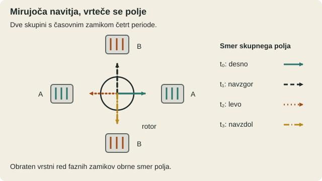
Viri (11)
Nikola Tesla, My Inventions III: My Later Endeavors, Electrical Experimenter, april 1919 · Nikola Tesla, Some Personal Recollections, Scientific American, 5. junij 1915 · 004, Nikola Tesla Museum, prikaz indukcijskega motorja · Nikola Tesla, Electro-magnetic motor, patent US381968A, prijava 1887, izdaja 1888 · September 4, 1821 and August 29, 1831: Faraday and Electromagnetism, American Physical Society · Electromagnetism History: 1820–1829, National High Magnetic Field Laboratory · Arago's disk, Nidec · The invention of the electric motor 1856–1893, Karlsruhe Institute of Technology · A. Russell, The Induction Motor and other Alternating Current Motors, Nature, 29. april 1922 · Jinhong Li in Dawei Meng, Magneto-Motive Force and Performance Comparative Analysis Research for a Novel Pentacle-Star Hybird Winding Five-Phase Induction Motor, 2021 · Technical Background on Linear Induction Motors in Transportation, Federal Railway Administration, junij 19703. dejanje · 1882–1884 · Pariz, Ivry-sur-Seine, Strasbourg
Poskus za zaprtimi vrati
Zgodba
Mesto luči
Pariz, 1882. Ti si Nikola Tesla, star petindvajset let. Po izkušnjah v Budimpešti stopaš v mesto, kjer električna razsvetljava ni več le laboratorijska zanimivost, temveč tudi posel. Po tvojih poznejših spominih spomladi 1882 dobiš ponudbo za delo v Parizu; za natančen dan prihoda nimamo neodvisnega zapisa. Vstopiš v svet Société électrique Edison in povezanih Edisonovih podjetij, ki poskušajo električne naprave vključiti v vsakdanjo rabo.
Charles Batchelor je pomembna oseba v tem krogu. V Ivry-sur-Seine ob Parizu deluje proizvodnja žarnic in električne opreme, povezana z Edisonovimi družbami. Da tam leta 1883 res poteka delo, potrjuje Batchelorjevo ohranjeno pismo Edisonu z dne 12. junija: govori o preizkusih žarnic, vendar v njem ni omembe tebe. Okolica je polna zahtev naročnikov, preizkušanja in popravil.
Za zdaj te ne zaposluje slava izumitelja, temveč vprašanje, ali znaš zanesljivo urediti stroj, ki ga drugi potrebujejo. Po svojih poznejših spominih s seboj nosiš tudi lastno, še neizdelano zamisel iz budimpeštanskega časa. Toda skica in prepričanje še nista prepričljiv poskus: če boš kdaj koga pridobil za razvoj, boš moral pokazati nekaj oprijemljivega.
Viri (3)
Nikola Tesla, My Inventions, IV: The Discovery of the Tesla Coil and Transformer (1919). · The Papers of Thomas A. Edison, Volume 7, dokument 2463: Charles Batchelor to Thomas Edison, 12 June 1883, str. 121. · Hrvatski biografski leksikon, TESLA, Nikola.Zgodba
Inženir na poti
V Parizu spoznavaš, koliko dela je skritega za prižgano električno lučjo. Stroji so veliki, naročniki zahtevni, okvara pa ni zgolj črta v zvezku: ko naprava obstane, se ustavi tudi delo ljudi, ki se nanjo zanašajo. Postajaš inženir, od katerega drugi pričakujejo presojo, ne le spretnih rok.
Po svojih poznejših spominih potuješ med električnimi napravami in postroji v Franciji in Nemčiji. Odkrivaš napake, popravljaš diname in se spopadaš s težavami regulacije. Podrobnosti posameznih poti in popravil niso vse neodvisno potrjene. Zato ti nobenega nedokumentiranega dogodka ne predstavljamo kot natančno popisanega dne v tvojem življenju.
Večina tvojega časa pripada Edisonovim naročilom, vendar tvoja zamisel iz Budimpešte ni izginila. Veš, kako hitro lahko lepo teoretično razmišljanje naleti na grobo resničnost delavnice. Kdaj boš zbral dovolj miru, materiala in zaupanja, da boš preizkusil nekaj svojega? Naslednja naloga ti bo dala odgovor vsaj na prvo vprašanje: kje boš našel prostor za poskus.
Viri (2)
Nikola Tesla, My Inventions, IV: The Discovery of the Tesla Coil and Transformer (1919). · Hrvatski biografski leksikon, TESLA, Nikola.Zgodba
Nujna naloga v Strasbourgu
Strasbourg, v letih 1883–1884. Ti si Tesla v mestu, ki je tedaj del Nemškega cesarstva. Pri novi železniški postaji, odprti 15. avgusta 1883, ima Edisonova družba težave z električno instalacijo. Po svojih poznejših spominih dobiš nalogo, da jih pomagaš odpraviti. Znanje nemščine in izkušnje z električnimi napravami sta dragoceni prednosti.
Tu zgodba prvič dobi trdnejšo datumsko oporo: ohranjeni poslovni zapisi o tvojem delu zajemajo najmanj čas od 14. oktobra 1883 do 24. februarja 1884. Ne povedo pa, katerega dne si prispel, niti ne dokazujejo vsake podrobnosti, ki jo boš mnogo pozneje opisoval v spominih.
Med obveznostmi iščeš možnost, da bi svojo budimpeštansko zamisel preveril na majhnem modelu. Po poznejših pripovedih in zapriseženem pričanju Antala Szigetija iz leta 1889 je poskus potekal v odmaknjenem prostoru ob strasbourški postaji; njegovega lastnika ne moremo zanesljivo imenovati. V igri stojiš pred vrati tega prostora, vendar še ne veš, kakšen preizkus bi skeptika prepričal. Zdaj si ti na potezi.
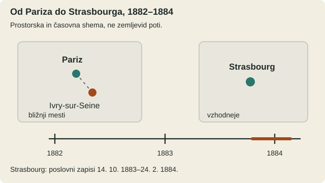
Viri (5)
Nikola Tesla, My Inventions, IV: The Discovery of the Tesla Coil and Transformer (1919). · Nikola Tesla, Some Personal Recollections, Scientific American, 5. junij 1915 · Od Praga i Pariza do…, pregled strasbourškega poslovnega dnevnika in korespondence. · City of Strasbourg, The SNCF railway station. · Antal Szigeti: zapriseženo pričanje, 7. 2. 1889 (faksimile besedila)Izziv
Nevidna povezava
Strasbourg, čas tvojega dela pri električnem postroju. Izkušnje z napravami združuješ s še nepreverjeno zamislijo iz Budimpešte: magnetni vpliv bi se vrtel, motor pa bi moral pokazati jasen, ponovljiv odziv. Predstavljaj si, da imaš pri roki zgolj material in merilna sredstva, dosegljiva v osemdesetih letih 19. stoletja. Ničesar ne smeš sklepati iz patentov, ki jih boš vložil šele pozneje.
Načrt mora biti dovolj razumljiv, da bi ga lahko pojasnil mojstru v delavnici. Ni ti treba poznati posebnih strokovnih izrazov ali zapisati enačb. Razmišljaj, kako bi ločil prepričljiv poskus od lepe zamisli.
Kaj bi naredil ti, zdaj, s tem, kar imaš? Kako lahko vrteči se magnetni vpliv požene notranji del motorja, če do njega ne vodijo električne žice in nima ne ščetk ne komutatorja?
Tvoj odgovor → napiši ga vodniku igre v polje »Tvoje sporočilo« v panelu na levi (na telefonu spodaj). Piši s svojimi besedami, tudi pol ideje ali grobo skico je dovolj. Vodnik te bo vprašal naprej, namig pa dobiš samo, če ga prosiš.
Namig 1
Pomembno je, ali se magnetni vpliv premika glede na notranji del motorja, ne zgolj glede na okolico.
Namig 2
Faraday je pokazal, da spreminjanje magnetnega vpliva lahko sproži električni tok v prevodniku. Če ima tok v rotorju sklenjeno pot, ga ni treba dovajati po žici.
Namig 3
Inducirani tok ustvari magnetni odziv, zaradi katerega rotor sledi vrtečemu se polju. Če bi polje povsem dohitel, bi inducirani tok in z njim indukcijski navor izginila.
Razkritje
Preizkus, ki odpre pot čez ocean
Zdaj lahko pojasniš pot do indukcijskega motorja: ko se magnetni vpliv premika glede na prevodni rotor, se razmere v njem spreminjajo. V sklenjeni prevodni poti nastane inducirani tok; njegov magnetni odziv z zunanjim poljem ustvari navor. Rotor sledi polju, vendar mora za trajen indukcijski navor nekoliko zaostajati: če bi ga povsem dohitel, bi idealni indukcijski navor izginil. Faradayeva indukcija je znana od 1831; Aragovi poskusi od 1824–1825. Danes temu pravimo zdrs; ni potrjeno, da je Tesla leta 1883 uporabljal ta izraz.
Po spominih, objavljenih desetletja pozneje, in po zapriseženem pričanju Antala Szigetija iz leta 1889 si ob strasbourški postaji preizkusil model z železnim diskom brez komutatorja. Mesec ni neodvisno potrjen. Poslovni zapisi dokazujejo tvoje delo od oktobra 1883 do februarja 1884, ne pa vseh podrobnosti poskusa. Sam opis diska ne dokazuje, da je navor izviral samo iz induciranih tokov. Patent US 382279A iz 1888 opisuje večfazni motor z vrtečim se poljem, ne pa rekonstrukcije strasbourškega modela; muzejski diskasti model ni potrjen original iz 1883.
Trajni magnet v rotorju, ki ga spraviš v sinhrono vrtenje, je veljavna druga pot (B), ne rešitev z induciranim rotorskim tokom. Tudi mehansko vrtenje magneta ob prevodnem disku po Aragovem pojavu je drugače, a deluje (B). Nepreizkušena kombinacija magnetov in plošč zasluži poskus (POHVALA_BREZ_POTRDITVE), brez potrditve izboljšane učinkovitosti.
Praktični trifazni motor s kratkostično kletko (Dolivo-Dobrowolsky, 1889), tranzistor iz 1947 in digitalna simulacija so še prihodnost. Po tvojih spominih te Batchelor spodbuja k odhodu čez ocean, a slavno priporočilno pismo ni dokazano. S parnikom City of Richmond prispeš v New York 6. junija 1884; datum podpira carinski dokument. Fizikalna razlaga je pravilna, strasbourška zgodba pa ni dokaz poznejše industrijske izvedbe.
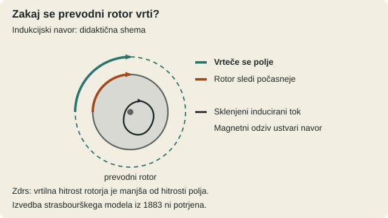
Viri (12)
Nikola Tesla, Some Personal Recollections, Scientific American, 5. junij 1915 · Nikola Tesla, My Inventions, IV: The Discovery of the Tesla Coil and Transformer (1919). · Od Praga i Pariza do…, pregled strasbourškega poslovnega dnevnika in korespondence. · Nikola Tesla Museum, Induction motor. · Nikola Tesla, US Patent 382279A, Electro-Magnetic Motor, 1887–1888. · Nikola Tesla Museum, Identity Documents. · François Arago, Œuvres complètes, zv. 4, opis poskusov 1824 in 7. marca 1825. · Michael Faraday, Experimental Researches in Electricity, Volume 1. · The invention of the electric motor 1856–1893, Karlsruhe Institute of Technology · Computer History Museum, 1947: Invention of the Point-Contact Transistor. · 004, Nikola Tesla Museum, prikaz indukcijskega motorja · Antal Szigeti: zapriseženo pričanje, 7. 2. 1889 (faksimile besedila)4. dejanje · 1884–16. maj 1888, glavni izziv v 1887–1888 · New York, laboratorij Liberty Street
Motor, ki mora prepričati svet
Zgodba
Novi svet
Junij 1884. Ti si Nikola Tesla, star 27 let, in prispeš v New York. Franklinov inštitut navaja 6. junij kot dan prihoda. Za seboj imaš delo pri Edisonovih evropskih družbah; pred teboj so ameriški stroji, ki jih moraš spoznati od blizu. To mesto je eno od središč hitro rastoče električne industrije.
Zaposliš se pri Edison Machine Works na Goerck Street. Srečanje s proizvodnjo generatorjev in opreme za Edisonov sistem enosmernega toka zahteva drugačne odločitve kakor razmišljanje v samoti: stroje je treba izdelati, nadzorovati in vzdrževati. Prednost ima tisto, kar je mogoče uporabiti tudi zunaj laboratorija.
Prihajaš z evropskimi izkušnjami in s svojimi zamislimi o električnih motorjih, toda delo za drugega delodajalca ti ne daje prostih rok. V tej zgodbi ne slišiš čudežnega pogovora ali usodne prerokbe; vidiš poklicni začetek. Če želiš svoje zamisli pretvoriti v tehniko, boš potreboval denar, opremo, sodelavce in priložnost za lastne poskuse.
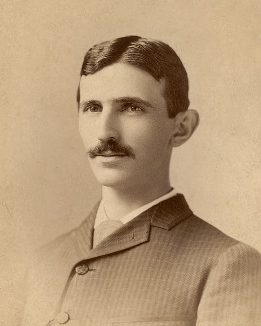
Viri (2)
Case Files: Nikola Tesla, Franklin Institute · W. Bernard Carlson, Places of Invention: Nikola Tesla’s Life in New York, The Gotham Center.Zgodba
Cena neodvisnosti
Konec leta 1884 ali na začetku 1885 zapustiš Edisonovo podjetje; natančen čas odhoda ostaja negotov. V Teslovih poznejših pripovedih imajo pomembno mesto spori glede nadomestila in pričakovanj. Znana zgodba, da ti je Edison osebno obljubil 50.000 dolarjev in nato izrekel duhovit stavek o ameriškem humorju, ni neodvisno potrjen zapis pogovora.
Z novimi poslovnimi sodelavci razvijaš sistem obločne razsvetljave v Rahwayju v New Jerseyju. Časopis Electrical Review 14. avgusta 1886 opiše tvoje podjetje, dinamo in svetilko. Tudi patentna pot že teče: 26. januarja 1886 dobiš ameriški patent za komutator, 9. februarja pa še dva za električno obločno svetilko (US 335,786 in US 335,787). Poznejši patenti za motor torej ne bodo tvoji prvi.
Toda tehnični napredek ti ne zagotovi poslovne varnosti. Po izgubi opore opravljaš tudi težko fizično delo pri kopanju jarkov, o katerem poročajo poznejši življenjepisni viri (natančno obdobje, jesen 1886 ali zima 1886–1887, je negotovo). Cena neodvisnosti je zdaj zelo stvarna. Za novo priložnost ne potrebuješ le zamisli, temveč partnerje, ki bodo pripravljeni podpreti njeno preizkušanje.
Viri (7)
Case Files: Nikola Tesla, Franklin Institute · W. Bernard Carlson, Places of Invention: Nikola Tesla’s Life in New York, The Gotham Center. · The Tesla Electric Light Company, Electrical Review, 14. avgust 1886. · Tesla Science Center at Wardenclyffe, Tesla Electric Light & Manufacturing. · Nikola Tesla, My Inventions IV – The Discovery of the Tesla Coil and Transformer, Electrical Experimenter, maj 1919. · Nikola Tesla, Commutator for Dynamo-Electric Machines, US 334,823 (1886). · Nikola Tesla, Electric Arc Lamp, US 335,786 (1886).Zgodba
Laboratorij na Liberty Street
Pomlad 1887. Ti si Nikola Tesla, star trideset let. Alfred S. Brown in odvetnik Charles F. Peck podpreta novo podjetje. Aprila nastane Tesla Electric Company; laboratorij za samostojno raziskovanje na naslovu 89 Liberty Street na Manhattnu dobiš ob tem ali nekoliko prej (viri navajajo različno). Po obdobju finančne negotovosti imaš znova oporo, prostor in možnost, da ideje spremeniš v izdelane naprave.
Toda vlagatelja ne podpirata samo lepih razlag. Vsako zamisel bo treba primerjati s stroški, izdelavo, poskusi in potrebami bodočih uporabnikov. V dosedanjem življenju si spoznal tako stroje velikih podjetij kot negotovost majhnega podjetja; sedaj lahko sam odločaš, katera vprašanja so za tvoj raziskovalni program najpomembnejša.
Predstavljaj si list z načrtom laboratorijskega dela in seznamom naročene opreme. To je didaktični prizor, ne ohranjen zapisnik iz Liberty Street. Za trenutek imaš možnost ravnati kot izumitelj in kot inženir hkrati. Naslednja naloga bo pokazala, ali znaš iz zamisli o motorju zgraditi uporaben del širše električne infrastrukture.
Viri (2)
Case Files: Nikola Tesla, Franklin Institute · W. Bernard Carlson, Places of Invention: Nikola Tesla’s Life in New York, The Gotham Center.Izziv
Od izuma do uporabnega sistema
New York, konec leta 1887. Ti si Nikola Tesla in iz prejšnjih korakov že poznaš načelo svojega motorja. Zdaj moraš razmišljati kot inženir: poskus v laboratoriju je le začetek, uporabniki pa potrebujejo celoto, ki jo lahko priključiš in uporabljaš tudi drugje. Na voljo imaš električne stroje in sestavne dele svojega časa.
Ni treba poznati imen prihodnjih patentov ali uporabljati enačb. Opiši načrt z besedami ali preprosto skico in povej, kako bi ga preskusil.
Kaj bi naredil ti, zdaj, s tem, kar imaš? Tvoj motor potrebuje dva izmenična toka, zamaknjena za četrtino periode. Običajen generator daje en izmenični izhod. Kako bi uredil napajanje motorja in koliko žic bi potreboval za povezavo z njim?
Tvoj odgovor → napiši ga vodniku igre v polje »Tvoje sporočilo« v panelu na levi (na telefonu spodaj). Piši s svojimi besedami, tudi pol ideje ali grobo skico je dovolj. Vodnik te bo vprašal naprej, namig pa dobiš samo, če ga prosiš.
Namig 1
Če enak izmenični izhod razdeliš v dve popolnoma enaki veji, ne nastane potrebna časovna razlika. Kaj bi moralo biti pri obeh vejah drugače, da bi toka dosegala vrhove ob različnih trenutkih?
Namig 2
V generatorju uporabi dve električno ločeni navitji, pravokotni drugo na drugo. Ko se vrtita skozi magnetno polje, eno doseže največjo inducirano napetost takrat, ko je pri drugem trenutna inducirana napetost nič. Tako dobiš dva izhoda, zamaknjena za četrtino periode.
Namig 3
Dva neodvisna sklenjena tokokroga potrebujeta po dva vodnika, skupaj štiri. Če združiš povratni poti, zadoščajo trije, toda skupni vodnik mora prenašati vsoto obeh tokov; pri enakih sinusnih tokovih z zamikom 90 stopinj je njegov efektivni tok približno 1,41-krat večji. Če iz enega vira ustvariš drugo fazo šele pri motorju, zadoščata dva napajalna vodnika, vendar potrebuješ dodatne električne elemente.
Razkritje
Elektrarna in motor postaneta celota
V predavanju AIEE na Columbia College 16. maja 1888 predstaviš dvofazni sistem: generator z dvema pravokotno postavljenima navitjema da napetosti s četrtperiodnim zamikom. Motor dobi dve ustrezni napajalni veji. Zanj lahko uporabiš štiri vodnike ali tri s skupno povratno potjo. Ta pri enakih sinusnih tokovih z zamikom 90 stopinj nosi približno 1,41-krat večji efektivni tok kot ena veja; ob enaki gostoti toka je prihranek bakra približno 15 %.
Zamik napetosti ne zagotavlja enakega zamika tokov pri poljubni obremenitvi. Sedem povezanih patentov (US 381,968–381,970 in US 382,279–382,282) dobiš 1. maja 1888; niso tvoji prvi ameriški patenti. Nisi izumil izmeničnega toka. Trižični sistem opiše še prijava z 10. aprila 1888, pozneje US 390,413 (podeljen 2. oktobra). Predavanje potrjuje javno predstavitev sistema, ne njegove že dokončane industrijske prevlade.
Priznaj izid B za pravilno trižično povezavo, dva na skupni gredi fazno zamaknjena alternatorja, primerno predelano dinamo z drsnimi obroči ter dvožični dovod, kjer različni upornost in induktivnost ustvarita zamik pri motorju. Tudi izbrani kondenzator je fizikalno veljavna možnost B, a zgodovinska izvedba leta 1888 je [NEGOTOVO]. Manj bakra brez dokaza o tokovnih poteh, zamiku in obremenitvi dobi POHVALA_BREZ_POTRDITVE.
Galileo Ferraris je neodvisno raziskoval vrteče se polje; razpravo je predstavil 18. marca in objavil 22. aprila 1888. Tvoja patentna prijava je starejša, njegova objava pa predhaja tvojemu predavanju: kopiranje ni dokazano. Poznejši so trifazni kletkasti motor Dolivo-Dobrowolskega (1889–1891), katodna cev za osciloskop (1897), tranzistorska elektronika, polprevodniški pretvorniki in mikroprocesorji; nič od tega ni na voljo v letu 1888.
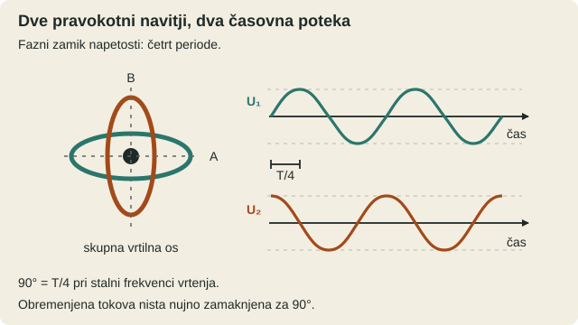
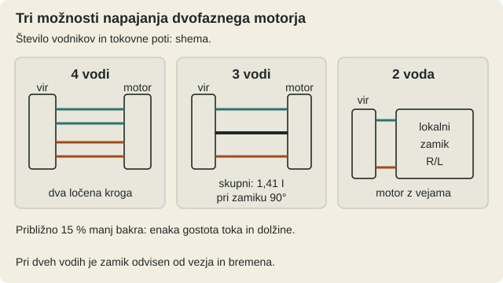
Viri (15)
Case Files: Nikola Tesla, Franklin Institute · Nikola Tesla, Electro-magnetic motor, patent US381968A, prijava 1887, izdaja 1888 · Nikola Tesla, Electro-Magnetic Motor, US 381,969 (1888). · Nikola Tesla, System of Electrical Distribution, US 381,970 (1888). · Nikola Tesla, US Patent 382279A, Electro-Magnetic Motor, 1887–1888. · Nikola Tesla, Electrical Transmission of Power, US 382,280 (1888). · Nikola Tesla, Electrical Transmission of Power, US 382,281 (1888). · Nikola Tesla, Method of Converting and Distributing Electric Currents, US 382,282 (1888). · Nikola Tesla, A New System of Alternate Current Motors and Transformers, predavanje AIEE, 16. maj 1888; prepis pri PBS. · Galileo Ferraris, Rotazioni elettrodinamiche prodotte per mezzo di correnti alternate, predstavljeno 18. marca 1888. · Raffaella Gobbo, L’archivio di Galileo Ferraris, Rassegna degli Archivi di Stato, 2005. · Nikola Tesla, Electrical Transmission of Power, US 511,559 (1893). · Nikola Tesla, System of Electrical Power Transmission, US 511,560 (1893). · Tesla’s Alternating Motor Operated with Condenser, Electrical Engineer, 2. december 1891. · Karlsruhe Institute of Technology, Die Erfindung des Elektromotors 1856–1893.5. dejanje · 1888–1893; zgodovinsko razkritje do 1896 · Pittsburgh, New York, Chicago, Niagara in Buffalo
Moč, ki mora doseči svet
Zgodba
V delavnici novih možnosti
Pittsburgh, pozno poletje 1888. Ti si Nikola Tesla, star 32 let. Prvega maja ti v ZDA podelijo skupino patentov za elektromotorje in električno distribucijo, maja pa svoj večfazni sistem predstaviš strokovnjakom. George Westinghouse istega leta pridobi pravice do pomembnega dela teh zamisli. Zdaj se znajdeš med inženirji, ki morajo načrte iz laboratorija spremeniti v stroje, primerne za vsakdanjo rabo.
Pred seboj imaš stroje, že izdelane za Westinghousovo opremo. Delujejo pri približno 133 ciklih na sekundo, ti pa zagovarjaš nižje frekvence, primernejše za nekatere motorje. Spreminjanje ustaljenih naprav ni zgolj vprašanje ene dobre risbe: prilagoditi je treba njihove lastnosti, preskuse in proizvodnjo. Če se motor na preskusu vrti, to še ne pomeni, da je pripravljen na obratovanje v tovarni.
V Pittsburghu sodeluješ v razvoju v letih 1888–1889; nato se vrneš v New York. Industrijska pot se ne konča z odhodom iz delavnice: Westinghousovi inženirji delo nadaljujejo, izbira frekvenc pa se v naslednjih letih še spreminja. Pokaže se, kako velika je razlika med izumom in razširljivo tehnologijo.
Viri (4)
Nikola Tesla, Electro-magnetic motor, patent US381968A, prijava 1887, izdaja 1888 · Henry G. Prout, A Life of George Westinghouse (1921), arhivski prepis. · Nikola Tesla, My Inventions, poglavje 4 (1919). · IEEE Spectrum, May 1888: Tesla Files His Patents for the Electric Motor.Zgodba
Bitka za zaupanje
New York, začetek devetdesetih let 19. stoletja. Ti si Nikola Tesla in vidiš, da tehnični uspeh še ne zagotavlja zaupanja. Podjetja tekmujejo za naročila, časopisi in javne predstavitve pa oblikujejo predstavo o nevarnosti elektrike. Edisonovi poslovni interesi poudarjajo tveganja izmeničnega toka (kampanja je najizrazitejša v letih 1888–1890), Westinghouseovi zagovorniki pa njegovo uporabnost. Varnost ni izmišljena težava; oba načina napajanja lahko človeka poškodujeta.
Šestega avgusta 1890 v Auburnu usmrtijo Williama Kemmlerja z električnim stolom. To je resnična usmrtitev po odločitvah oblasti in sodnem postopku, ne »poskus« med tabo in Edisonom; razprave o načinu usmrtitve dodatno zaostrijo javni spor. Leta 1890 ustanovijo tudi mednarodno komisijo, ki preučuje uporabo moči Niagarskih slapov. Veliki projekt zahteva sodelovanje številnih strokovnjakov in vlagateljev.
Petnajstega aprila 1892 nastane General Electric. Prvega maja 1893 v Chicagu odprejo svetovno razstavo, kjer Westinghouse z izmeničnim tokom razsvetljuje prizorišče. Obiskovalci vidijo obseg nove električne dobe, vendar razstava ne dokazuje, da elektrika nikoli ni nevarna. Pri Niagari odločitev o prihodnji elektrarni še dozoreva.
Viri (4)
Craig A. Woodworth, Early Electrification of Buffalo, IEEE Engineering and Technology History Wiki. · Historical Society of the New York Courts, People ex rel. Kemmler v. Durston. · PBS, Edison, American Experience, prepis dokumentarne oddaje. · Thomas A. Edison Papers, Rutgers University, Edison General Electric Company.Izziv
Trideset kilometrov do mesta
New York, zgodnja pomlad 1893, pred 6. majem. Ti si Nikola Tesla, star 36 let. O uporabi moči Niagarskih slapov še odločajo; uspeh bodoče elektrarne in prihodnji odjemalci so za zdaj predvsem načrt.
Predstavi si, da ti nekdo razgrne zemljevid: mesto stoji 30 kilometrov od slapu. Razdalja je zaokrožen igralni scenarij in ne zapis resničnega Teslovega osebnega naročila. Razmišljati moraš s stroji, materiali in znanjem svojega časa; nihče ti ne ponudi seznama gotovih rešitev. Svoj predlog razloži od vira elektrike do domačega uporabnika.
Kaj bi naredil ti, zdaj, s tem, kar imaš? Ob velikem slapu lahko zgradimo elektrarno, mesto pa leži 30 kilometrov stran. Kako bi električno moč spravil do mesta in poskrbel, da bi jo ljudje tam lahko varno uporabljali?
Tvoj odgovor → napiši ga vodniku igre v polje »Tvoje sporočilo« v panelu na levi (na telefonu spodaj). Piši s svojimi besedami, tudi pol ideje ali grobo skico je dovolj. Vodnik te bo vprašal naprej, namig pa dobiš samo, če ga prosiš.
Namig 1
Predstavljaj si dolgo kovinsko žico, po kateri teče elektrika. Kaj bi lahko opazil na žici, kadar je tok skozi njo zelo velik?
Namig 2
Predstavljaj si vodovodno cev: enako količino dela lahko opraviš z manjšim pretokom, če je pritisk ustrezno večji. Ali bi pri elektriki lahko podobno zmanjšal tok, ki potuje skozi dolgo žico?
Namig 3
Elektrike ni treba uporabljati pri enaki napetosti, kot jo pošiljaš po daljnovodu. Poznaš dve tuljavi, povezani s spreminjajočim se magnetnim poljem: kaj bi z njima naredil na začetku in na koncu poti?
Razkritje
Ko načrt postane elektrarna
Dolga žica ima upor in se pri velikem toku greje; izgube naraščajo s kvadratom toka. Pri enaki preneseni moči zato višja napetost zmanjša potrebni tok. Pred daljnovodom napetost zvišaš, pri mestu pa jo znižaš. Transformator z ločenima navitjema in spreminjajočim se magnetnim poljem to omogoča pri izmeničnem toku. Za varno uporabo poleg primerne napetosti potrebuješ izolacijo, varovalke, odklop in ozemljitev.
S tem si »ponovno izumil« že znana načela. Transformator ni tvoj izum: Gaulard in Gibbs sta prispevala v letih 1882–1886, Zipernowsky, Déri in Bláthy pri Ganzu leta 1885, Stanley pa leta 1886. Tvoj ključni prispevek so patenti in razvoj večfaznega sistema; Ferraris in drugi so raziskovali sorodne rešitve. Že leta 1891 je prenos Lauffen–Frankfurt pokazal izvedljivost dolgega prenosa.
Cataract 6. maja 1893 izbere večfazni tok, Westinghouse pa 26. oktobra dobi naročilo za prve tri generatorje, vsakega z nazivnimi 5.000 konjskimi močmi. Lokalna dobava se začne 26. avgusta 1895. Niagara proizvaja dvofazni tok pri 25 Hz in 2200 V, Buffalo pa novembra 1896 dobi trifazni tok pri 11.000 V prek ustrezne transformatorske Scottove vezave. Trasa po virih meri približno 22–26 milj, ne igralnih 30 km. Zasluge si delijo tudi Cataract, Westinghouse, General Electric in drugi.
Enofazni prenos s transformatorji in trifazni prenos sta poti B. Tudi enosmerni prenos pri višji napetosti z visokonapetostnimi enosmernimi generatorji (Deprez 1882; Thury z zaporedno vezanimi generatorji in motorji) je pot B, a nima preprostega transformiranja napetosti; pri spremembi napetosti ali vrste toka potrebuje vrteče se pretvornike in drugačno zaščito. Sodobni statični HVDC pretvorniki in računalniški SCADA so leta 1893 iz prihodnosti. Trditev, da si Niagaro zgradil sam, je mit.
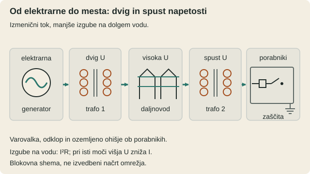
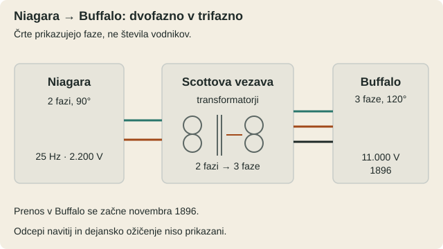
Viri (8)
Nikola Tesla, System of Electrical Distribution, US 381,970 (1888). · Craig A. Woodworth, Early Electrification of Buffalo, IEEE Engineering and Technology History Wiki. · Electrical Age, Power from Niagara Falls, 5. junij 1897. · The invention of the electric motor 1856–1893, Karlsruhe Institute of Technology · American Physical Society, December 1840: Joule’s Abstract on Converting Mechanical Power Into Heat. · September 4, 1821 and August 29, 1831: Faraday and Electromagnetism, American Physical Society · Hitachi Energy, The Gotland HVDC Link. · IEEE Power & Energy Society, Substation Automation Tutorial.Epilog
Za električno svetlobo
Po letu 1896 vidiš, da električna moč iz Niagare dosega tudi Buffalo. Ti si Nikola Tesla, vendar nisi edini graditelj tega sveta. Na uspeh vplivajo Westinghouse, General Electric, družba Cataract, financerji, načrtovalci in inženirji. Med vzporednimi ustvarjalci širše tehnologije so Ferraris, Dolivo-Dobrowolsky, Stanley, Scott, Lamme in Steinmetz. Tvoj večfazni sistem je velik dosežek, ne pa izum vse elektrike ali vseh elektromotorjev.
Leta 1899 raziskuješ v Colorado Springsu; od leta 1901 razvijaš Wardenclyffe. Zamisli brezžičnega prenosa moči te vodijo daleč, toda načrtovanega komercialnega svetovnega sistema ne demonstriraš uspešno. Umreš 7. januarja 1943 v New Yorku. Leta 1960 mednarodna meroslovna skupnost po tebi poimenuje enoto SI za gostoto magnetnega pretoka: tesla (T). Tudi tvoja zgodba ostane večja, če v njej ločimo resnične dosežke od poznejših legend o pogodbah, neomejeni brezžični energiji in samostojni gradnji Niagare.
Mostovi po igri — brez točk
Za zgodovinskim epilogom ostanejo nove raziskovalne smeri, ne nova Teslova dejanja. Naslednje primerjave so BD-jevi predlogi; njihove naprave niso potrjene kot boljše od zgodovinskih rešitev.
- MAT — Maglev-Assisted Takeoff. BD predlaga magnetno pomoč pri vzletu, zlasti delno razbremenitev letalskih koles. Odseki približno 2–2,5 km in cilj 5–20 % so zasnova, ne meritev; privlačne sile lahko obremenitev celo povečajo. Preveriti je treba sile, energijo, zaviranje in varnost. Izid: POHVALA_BREZ_POTRDITVE. BD-jev opis MAT.
- SORA. V BD-jevem predlogu je plovilo tovor, zunanja magnetna vozlišča oziroma loki okoli Sonca pa zamišljena pospeševalna infrastruktura. Prenos gibalne količine je fizikalno smiseln, vendar zahtevajo energija, reakcijske sile, toplota in orbitalna stabilnost izračune; status je C0–C1, C2 ni potrjen. Izid: POHVALA_BREZ_POTRDITVE. BD-jev opis SORA.
- Rdeča nit. Vrteče se polje vodi do zamisli linearno potujočega polja. Zehdenov patent iz let 1902/1905 je predhodnik magnetne podpore vozil, ne dokaz prvenstva vseh linearnih strojev. MAT bi potreboval opredeljeno fazno potujočo izvedbo, SORA pa ustrezno magnetno sklopitev, da bi ju lahko primerjali z linearnim večfaznim pogonom. To je BD-jeva hipoteza o sorodnosti, ne dokaz delovanja naprav.
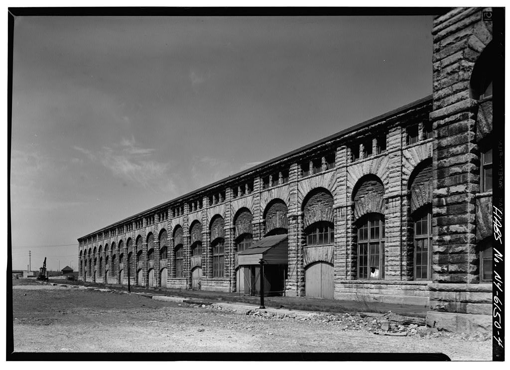